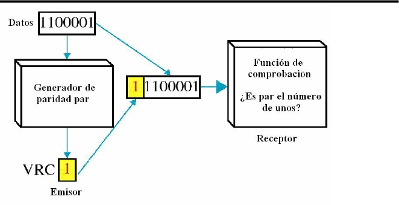
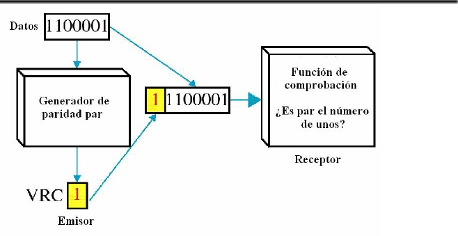

La verificación de redundancia vertical es uno de los métodos más simples de detección de errores. Stallings la describe como una técnica básica basada en bits de paridad.
VRC añade un bit de paridad a cada bloque de datos para verificar errores simples. Aunque es fácil de implementar, Forouzan menciona que su capacidad de detección es limitada.
En conclusión, VRC es un método sencillo pero poco robusto para la detección de errores.
 
